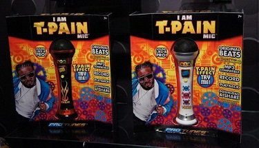

After roughly four years of music production, one very redundant argument I face far too often is “Anyone who uses Autotune does not possess talent.” Now I’m not here to tell anyone they cannot have their own opinions on a subject like this. Music is subjective and everyone has the right to enjoy it in their own way. What I will do is talk about how important Autotune has been for the past decades and still is in an effort to shine some light on the process of Music Production, which most people don’t really ever need to look into.

So what is Auto-tune exactly and why has there been such a stigma around it? Autotune is just a software which helps a person sing in tune to the rest of the song. All it really does is change some notes the singer is hitting to match the scale of the song. This is crucial to music production because if any of the components of the song are out of tune for even a millisecond or two, it is highly noticeable to the ear of the listener. This creates an unpleasant experience for everyone involved. So in 1997, Andy Hildebrand, CEO of Antares Audio Technologies brought us the first model of digital Autotune. Now this software saw countless successors and soon enough every studio had some form of Autotune ready for its producers to use. The two main sources of the stigma around it stem from live performances with excessive Autotune (as done throughout the last two decades by artists like Britney Spears, Justin Bieber and Drake) and artists who excessively use Autotune as a creative tool (such as T-Pain and Lil Wayne) to make their songs unique. Personally, I am not an advocate of using Autotune in live performances as i do believe it ruins the authenticity of what a live performance should be. However, using it as a creative tool is completely the artist’s discretion. It is not for us to decide how one should express themselves musically, but I do understand if people aren’t particularly fond of that.
This form of expression through Autotune started in 1998 with Cher’s comeback album, “Believe.” She pushed the limits of what the software could do and created a sound that was unique at her time, inspiring countless other artists to do the same over the next two decades. These days, Autotune can be found everywhere from Quadeca to the 1975. What we have to is the growing popularity of Autotune revolutionised music as we know it. Tuning vocals has always been a thing producers used in their songs. Very few can sing a studio version of a song perfectly without any errors in pitch. Autotune just made that process infinitely easier and accessible to everyone. A huge shift in the music industry was found in the early 2010s when artists such as Drake and the Weeknd started making a name for themselves through their unique sound which at the time was a fusion between Hip Hop and RnB. Hip Hop artists have always been an advocate of Autotune in both its fundamental and creative usage such as Eminem from the “Slim Shady LP.” Around the Drake era of RnB pop however, Autotune saw a massive surge in usage in all kinds of genres. Many believe that that was the catalyst genre for what we call pop music today, but another very influential genre of music that was gaining a lot of attention during this time was Electronic Music. Through Electronic Music, producers and artists had the opportunity to break music down to its basic components and work from the ground upwards with a completely different approach than was popular before. This is where artists such as Daft Punk and the Cataracs were starting to be covered by mainstream media because of their unique robotic/synthetic sounds which were made possible with the utilization of countless different softwares, Autotune being a crucial one. Autotune now played a much bigger role in the music industry when every instrument started being synthesized. There was no room left for imperfection in this new era of recording music and producers realized that.
I would like to conclude with the fact that as seen from Cher’s “Believe” album, Autotune is the most prominent feature used on the vocals to achieve that particular sound. However, that was just her experimenting with a new software that wasn’t previously available. Even Andy Hildebrand, the creator of Autotune stated that he never really expected anyone to seriously use that feature of the software because of how bold and extreme its effects are but that’s what the music industry is about isn’t it? It’s just experimentation and finding what works for yourself, hoping you’ll come up with the next big thing. The synthetic vocals we hear in music today doesn’t actually have much to do with Autotune but rather with an array of effects and other softwares used to give it that particular sound. There’s no button you can press to make something sound like you want it to. It takes years, maybe decades of work and practice to be in a position of a professional music producer. That’s the whole point of this article. Autotune isn’t a luxury; it’s a necessity when it comes to recording vocals. Music as a concept is dynamic and will keep evolving as long as we are willing to create. Autotune is just one of the thousands of things that make it what it is today.